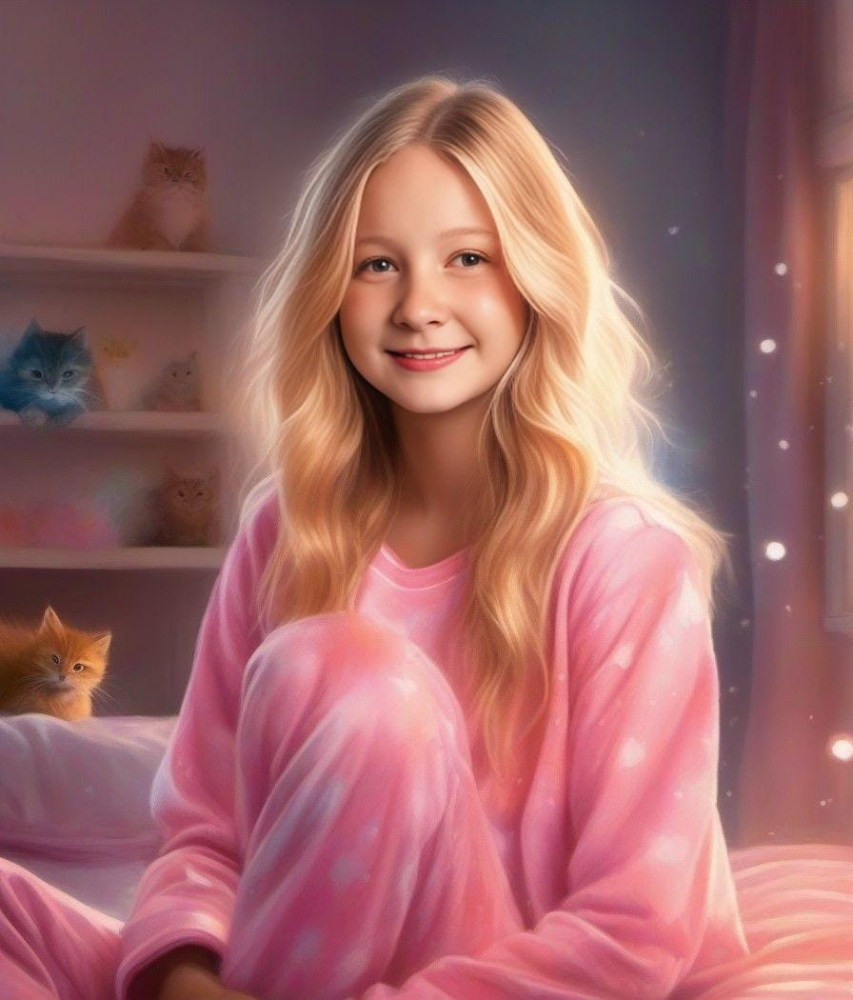

Hi, I'm Aisling Daisy Kirby, a student from Leeds. I'm passionate about art and computer science, and I also enjoy practicing Spanish—I've got a pretty impressive Duolingo streak! My zodiac sign is Cancer and lucky to have an amazing group of six friends.
